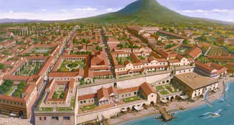

Herculaneum as a City
|  | Herculaneum was a dream town. There were several reasons for this. The
first is that it had a bay view. It overlooked the Bay
of Naples. Because of the view, many wealthy people wanted to move
there to live. The wealthy people spent their savings on their homes to
add things like gardens, exotic plants, and other modern conveniences.
Herculaneum contained many villas which it was
famous for. One of the modern conveniences and technological advancements
was the heating system in their homes. This system would pump hot air
through the cavities in walls. Herculaneum also controlled the distribution
of water by forcing it through aquaeductus. Then,
the water went into underground pipes where by using hydraulic forces,
it was pumped into the homes, public buildings, and fountains. The people
in Herculaneum counted Roman miles using a gear. This gear attached to
the back wheel that would spin and drop a pebble into a box for every
Roman mile traveled. |